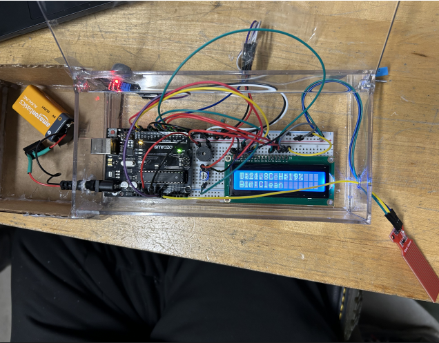
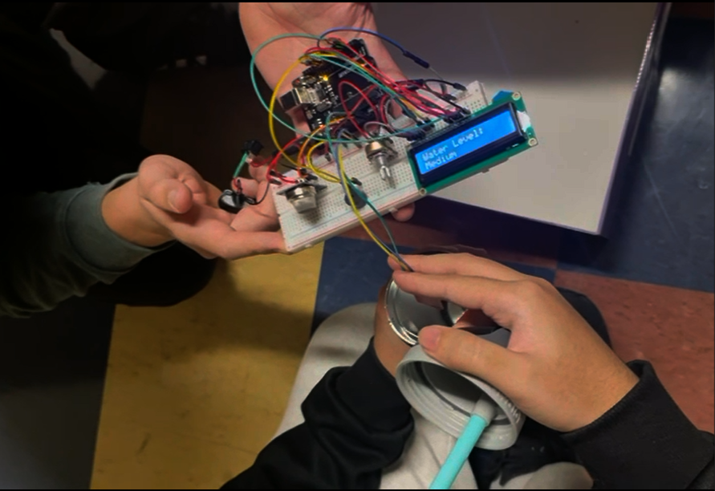

Course: TECH 117 (Computer Engineering Technology, Fall 2025)
Instructor: Ph.D. Ana Rodrigues
Team Members:
This project uses an Arduino Uno, and 3 different sensors: Temperature and Humidity, Air Qaulity, Water Level sensors. Along with a 16x2 LCD and Buzzer to provide alerts and constant readings, similar to a smart smoke detector.
The tempurature and humidity sensor measures the tempurature, the air quality sensor measures the air quality and the water level sensors measures the water level; the Arduino constantly displays measurments through the LCD, while buzzer alarms at certain thresholds and instances.
Working on this project made us more aware of how even small electronic systems can be designed with sustainability in mind. The sensors and Arduino not only help monitor temperature, humidity, air quality, and water levels, but they also run on very little power, which means they can be supported by simple USB or battery without wasting to much energy. The components are modular and reusable, so if one part fails or the project evolves, nothing has to be thrown away unnecessarily. Choosing compliant hardware and ordering parts together also reduces waste and shipping emissions ex: Amazon, which makes this system not only functional but also responsible toward the environment.
| Item | Qty | Unit Price (CAD) | Subtotal (CAD) | Source |
|---|---|---|---|---|
| Arduino Uno Rev3 | 1 | $27.60 | $27.60 | Arduino Store |
| Tempurature and Humidity Sensor | 1 | $4.95 | $4.95 | BcRobotics |
| Air Quality Sensor | 1 | $1.65 | $1.65 | Aliexpress |
| Water Level Sensor | 1 | $8.29 | $8.29 | Amazon |
| Breadboard | 1 | $7.95 | $7.95 | Pishiop |
| Jumperwires | ~50 | $8.59 | $8.59 | Amazon |
| 16x2 LCD | 1 | $17.00 | $17.00 | Robotshop |
| Buzzer | 1 | $0.52 | $0.52 | pcboard |
| Potentiometer | 1 | $1 | $1 | Alibaba |
| Power Source | 1 | $10.75 | $10.75 | amazon |
| Clear Casing or Box | 1-2 | $22 | $22 | amazon |
| Switch | 1 | $9.47 | $9.47 | amazon |
| Estimated Total | $119.77 | |||
The following image shows the assembled prototype on a breadboard.
The following Arduino code controls the system, display, and activation of the buzzer based on thresholds and readings from the MQ135, DHT11, and Water sensor.
#include
#include
// LCD pins: RS, E, D4, D5, D6, D7
LiquidCrystal lcd(12, 11, 5, 4, 3, 2);
// DHT setup
#define DHTPIN 7 // DHT11 data pin
#define DHTTYPE DHT11
DHT dht(DHTPIN, DHTTYPE);
// MQ sensor
const int mqPin = A0;
// Water level sensor
const int waterPin = A1;
// Passive buzzer pin
const int buzzerPin = 8;
void setup() {
lcd.begin(16, 2);
dht.begin();
Serial.begin(9600);
pinMode(buzzerPin, OUTPUT);
}
void loop() {
float temp = dht.readTemperature();
float hum = dht.readHumidity();
int mqValue = analogRead(mqPin);
int waterValue = analogRead(waterPin);
// Air quality status
String airStatus;
if (mqValue < 200) airStatus = "Clean";
else if (mqValue < 400) airStatus = "Moderate";
else if (mqValue < 600) airStatus = "Polluted";
else airStatus = "Smoke!";
// Water level status
String waterStatus;
if (waterValue < 300) waterStatus = "Low";
else if (waterValue < 700) waterStatus = "Medium";
else waterStatus = "High";
// --- LCD Display ---
lcd.clear();
lcd.setCursor(0,0);
lcd.print("T:");
lcd.print(temp,1);
lcd.print("C H:");
lcd.print(hum,0);
lcd.print("%");
lcd.setCursor(0,1);
lcd.print("Air:");
lcd.print(airStatus);
delay(2000);
lcd.clear();
lcd.setCursor(0,0);
lcd.print("Water Level:");
lcd.setCursor(0,1);
lcd.print(waterStatus);
delay(2000);
// --- Passive Buzzer Logic ---
bool alert = false;
// Water alerts
if (waterStatus == "Medium") {
alert = true;
tone(buzzerPin, 1000, 500); // medium tone
delay(500);
noTone(buzzerPin);
}
else if (waterStatus == "High") {
alert = true;
tone(buzzerPin, 1500, 800); // higher tone
delay(800);
noTone(buzzerPin);
}
// Air quality alerts
if (airStatus == "Polluted") {
alert = true;
tone(buzzerPin, 1200, 400); // warning tone
delay(400);
noTone(buzzerPin);
}
else if (airStatus == "Smoke!") {
alert = true;
tone(buzzerPin, 2000, 1000); // urgent high tone
delay(1000);
noTone(buzzerPin);
}
// Humidity alerts
if (hum >= 70) {
alert = true;
tone(buzzerPin, 800, 600); // strong warning tone
delay(600);
noTone(buzzerPin);
}
else if (hum >= 50) {
alert = true;
tone(buzzerPin, 1000, 400); // louder tone
delay(400);
noTone(buzzerPin);
}
if (!alert) {
noTone(buzzerPin); // silence when no alert
}
// --- Serial Monitor ---
Serial.print("Temp: ");
Serial.print(temp);
Serial.print(" C, Hum: ");
Serial.print(hum);
Serial.print(" %, MQ: ");
Serial.print(mqValue);
Serial.print(" → ");
Serial.print(airStatus);
Serial.print(", Water: ");
Serial.print(waterStatus);
Serial.print(" (Raw: ");
Serial.print(waterValue);
Serial.println(")");
}
Building this system showed us how practical and versatile Arduino can be for solving real-world problems. Beyond just demonstrating distance-based alerting, the project gave us hands-on experience with multiple sensors, displays. We are glad that the design is fairly affordable and sustainable, since the reusable components mean we can adapt or expand the system in the future without creating unnecessary waste. Overall, it’s a project that works but also reflects our effort to learn and create.
The following external resources and example projects demonstrate related Arduino applications using Temperature and Humidity, Air Quality, and Water Level Sensors, passive buzzers, and LCD: